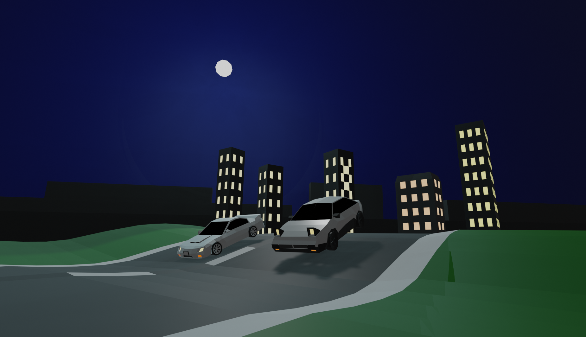

Grant Lew
My Class Final Project!
I decided to use blender for my final project because i enjoyed making things using blender. I wanted to create another Initial D related project again because I really like the show. I wanted to recreate one of the racing scenes but I added my own touch to it. The background is not the same as what it would be in the show. Enjoy!
